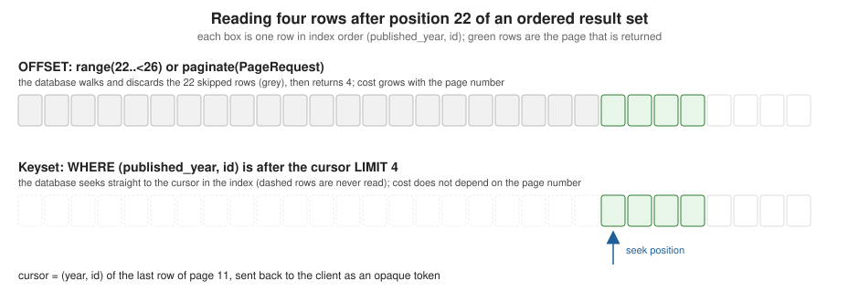

Fluent Queries and Pagination
|
This content was generated with the assistance of AI and should be verified against the official documentation before being relied on in production. |
This page is written against Vapor 4.122.2 on Swift 6.4 (the package builds in the Swift 6 language mode with tools
version 6.3, as the official template does; Vapor 4.122.2 itself needs tools version 6.0), with fluent 4.13.0,
fluent-kit 1.57.0, fluent-sqlite-driver 4.9.0 and sql-kit 3.36.0, checked on 2026-10-17. Every Swift listing on
this page was compiled in the Swift 6 language mode with zero warnings in a scratch package and run against a seeded
in-memory SQLite database; the output, the SQL and the timings shown are captured from those runs. Code that is specific
to PostgreSQL, MySQL or MongoDB was not run against a live server: where the page says what another driver does, that
comes from the drivers' source and from the official documentation, and it is marked as such. Vapor 5 is at 5.0.0-beta.4
and is not released yet; this page makes no claim about how Fluent will be packaged for it. The page uses the
Bookshelf models of the earlier pages of this section (Author, Book, Review, User, Tag, BookTag, Loan)
unchanged. Swift itself is covered by the Swift Reference, and async
functions, Sendable and isolation by Async/Await and
Tasks and Actors, Isolation and Sendable. The same
topic in Rust is in Databases with SQLx; why large offsets are slow in every
store, and how the other technologies on this site page by key instead, is in
Pagination: Offset vs. Keyset. Models
(Fluent Models), relations (Fluent
Relations) and migrations (Migrations & Schema) belong to other pages of
this section; this page assumes them and concentrates on reading and bulk-changing rows.
What a query is, and where it sits
Fluent separates the model (a class that maps a row) from the query (a description of which rows to read or change).
Book.query(on: db) returns a QueryBuilder<Book>: a final class that accumulates filters, sorts, limits, joins
and selected fields into a DatabaseQuery value and sends it to the driver only when a terminal method runs (all,
first, count, update, delete, paginate and so on). The driver turns the description into SQL (or a MongoDB
command) and binds every value as a parameter, so filtering with user input does not by itself allow SQL injection (the
LIKE wildcard caveat further down is a different problem).
In a request the builder is created in the route handler, on req.db, the database of the request: it carries the
request’s logger and event loop and applies the page size limit described later.
-
Middleware runs first (authentication, rate limiting); then the router matches the route and the handler decodes the query string into a
Contentstruct (the Validation page covers checking it). -
The handler builds a
QueryBuilderand awaits it. The statement runs on a connection borrowed from the driver’s pool, which goes back to the pool when theawaitreturns. -
The result (models, a number, a
Page) is mapped to a DTO and returned; Vapor encodes it with the content encoder.
Three properties of the builder explain most surprises:
-
It is a reference type that mutates itself.
query.filter(...)changesqueryand returns the same object, so a terminal method called twice on one builder repeats one query. To reuse a base query with different endings, take acopy()first (the/statsroute below does). -
Filters accumulate with
AND.ORneedsgroup(.or). -
It is not
Sendable. Build it and await it in one task; see "Swift 6 and concurrency".
The data used by the examples
The listings use the canonical Bookshelf models and the CreateBookshelf migration of the earlier pages, plus a seed
migration that is local to this page: 4 authors, 26 books (21 published, 2 archived, 3 draft), 3 users, 10 reviews, 3
tags with their pivot rows and 5 loans. Identifiers are fixed values so that cursors and output are reproducible; real
data uses generated UUIDs. Page-local additions, none of which renames or changes a canonical model: that seed
migration, a BookSummary DTO, and the cursor and search types shown below. Configuration, with SQLite in memory and a
page size limit of 20 (explained in the offset pagination section):
import Fluent
import FluentSQLiteDriver
import Vapor
func configure(_ app: Application) async throws {
app.databases.use(.sqlite(.memory), as: .sqlite)
app.migrations.add(CreateBookshelf())
app.migrations.add(SeedBookshelf())
app.asyncCommands.use(DemoCommand(), as: "demo")
app.asyncCommands.use(BenchCommand(), as: "bench")
app.fluent.pagination.pageSizeLimit = 20
try await app.autoMigrate()
searchRoutes(app)
paginationRoutes(app)
}Source: Vapor docs: Fluent overview
Reading rows: all, first, find
all() runs the query and returns every matching model; first() adds LIMIT 1 and returns nil when nothing
matches; Model.find(_:on:) is the primary key shortcut. filter takes a key path to the property wrapper
(\.$status, with the dollar sign) and a value, and the compiler checks that the value has the property’s type,
including enums:
func basicQueries(on db: any Database) async throws {
// SELECT ... FROM books
let everything = try await Book.query(on: db).all()
// WHERE status = 'published' AND published_year >= 1970 ORDER BY published_year DESC, title ASC
let recent = try await Book.query(on: db)
.filter(\.$status == .published)
.filter(\.$publishedYear >= 1970)
.sort(\.$publishedYear, .descending)
.sort(\.$title)
.all()
// LIMIT 1: nil when nothing matches
let dune = try await Book.query(on: db).filter(\.$isbn == "9780000000001").first()
// find(_:on:) is the primary-key shortcut
let byID = try await Book.find(seedID(2, 1), on: db)
print("all:", everything.count, "recent:", recent.count, "first:", dune?.title ?? "nil", "find:", byID?.title ?? "nil")
print(recent.prefix(3).map { "\($0.publishedYear) \($0.title)" })
}Source: Vapor docs: Fluent query
Output, with the SQL Fluent sent at the debug log level (swift run App serve --log debug):
all: 26 recent: 12 first: Dune find: Dune
["2017 The Stone Sky", "2016 The Obelisk Gate", "2015 The Fifth Season"]
SELECT <every books column> FROM "books"
SELECT <every books column> FROM "books" WHERE "books"."status" = 'published' AND "books"."published_year" >= ?1
ORDER BY "books"."published_year" DESC, "books"."title" ASC -- binds: [1970]
SELECT <every books column> FROM "books" WHERE "books"."isbn" = ?1 LIMIT 1
SELECT <every books column> FROM "books" WHERE "books"."id" = ?1 LIMIT 1Two details: the enum value 'published' is written into the SQL as a literal because it comes from a closed Swift
enum, while the year is a bound parameter; and the column list is abbreviated here (<every books column>), the real
statement names all nine columns with an alias for each.
Filters and operators
Operators are overloaded on key paths, so a filter reads like a Swift expression. They come in four groups; the table is
the one of the official documentation, checked against fluent-kit 1.57.0, with the SQL the SQLite driver generated:
| Operator | Meaning | Generated SQL |
|---|---|---|
|
equal, not equal |
|
|
ordering (a range is two filters) |
|
|
value is, is not, in the collection |
|
|
contains, does not contain |
|
|
starts with, does not start with |
|
|
ends with, does not end with |
|
func operatorQueries(on db: any Database) async throws {
let contains = try await Book.query(on: db).filter(\.$title ~~ "dune").all(\.$title) // LIKE '%dune%'
let prefix = try await Book.query(on: db).filter(\.$title =~ "The ").all(\.$title) // LIKE 'The %'
let suffix = try await Book.query(on: db).filter(\.$title ~= "Dune").all(\.$title) // LIKE '%Dune'
let notContains = try await Book.query(on: db).filter(\.$title !~ "Foundation").count() // NOT LIKE '%Foundation%'
let inList = try await Book.query(on: db).filter(\.$publishedYear ~~ [1965, 1969, 1976]).all(\.$title) // IN (...)
let notIn = try await Book.query(on: db).filter(\.$status !~ [.published, .archived]).all(\.$title) // NOT IN (...)
let between = try await Book.query(on: db).filter(\.$priceCents >= 1000).filter(\.$priceCents < 1200).count()
let notEqual = try await Book.query(on: db).filter(\.$status != .published).count()
// LIKE wildcards in the operand are not escaped: "_une" matches "Dune"
let wildcard = try await Book.query(on: db).filter(\.$title ~~ "_une").all(\.$title)
print("wildcard", wildcard)
print("contains", contains)
print("prefix", prefix)
print("suffix", suffix)
print("notContains", notContains, "inList", inList)
print("notIn", notIn, "between", between, "notEqual", notEqual)
}Source: Vapor docs: Fluent query, filter
Output:
wildcard ["Dune", "Dune Messiah", "Children of Dune", "God Emperor of Dune", "Heretics of Dune", "Chapterhouse: Dune"]
contains ["Dune", "Dune Messiah", "Children of Dune", "God Emperor of Dune", "Heretics of Dune", "Chapterhouse: Dune"]
prefix ["The Tombs of Atuan", "The Farthest Shore", ... 12 titles starting with "The "]
suffix ["Dune", "Children of Dune", "God Emperor of Dune", "Heretics of Dune", "Chapterhouse: Dune"]
notContains 22 inList ["Dune", "Dune Messiah", "Children of Dune", "The Left Hand of Darkness"]
notIn ["Pebble in the Sky", "The Killing Moon", "The City We Became"] between 6 notEqual 5What the operators do not do, all of which the run above shows or the source confirms:
-
The LIKE operand is not escaped. Fluent binds the text (
'%' + value + '%'is the bound parameter), so there is no SQL injection, but a%or_typed by a user is a wildcard: the "wildcard" line above matchedDunewith the operand"_une", and?q=%25matches every row. The generatedLIKEhas noESCAPEclause and the builder offers no way to add one. Strip or reject%and_in user input (the search route below does), or use SQLKit for that one query. -
Case sensitivity belongs to the database. SQLite’s
LIKEignores case for ASCII, which is why"dune"foundDuneabove. The SQL converter influent-kit1.57.0 emits plainLIKEfor every SQL driver and the PostgreSQL driver has noILIKEoverride, so on PostgreSQL the same filter is case sensitive; on MySQL it follows the column collation. Those two were not run for this page; test the behaviour you rely on against your production database. -
Leading-wildcard
LIKEcannot use a B-tree index, so~~and~=on a large table scan it.=~(prefix) can, on databases and collations that support it. Full-text search is a different tool. -
An empty collection is handled:
~~ []becomes1 = 0(no rows) rather than invalid SQL. -
Two filters on the same property are
AND`ed.`filter(\.$title ~~ "foundation").filter(\.$title ~~ "dune") matches titles containing both words (none), not either: see the next section. -
Comparing two columns uses key paths on both sides,
\Reviewer.$email != \Borrower.$email, and works across joined models.
group: OR and nested conditions
group(.or) { ... } collects the filters added inside the closure into one parenthesised condition combined with the
given relation (.and is the default). Groups nest, which is how keyset pagination expresses a tuple comparison below.
func groupedQueries(on db: any Database) async throws {
// WHERE status = 'published' AND (title LIKE '%foundation%' OR title LIKE '%dune%')
let titles = try await Book.query(on: db)
.filter(\.$status == .published)
.group(.or) { group in
group.filter(\.$title ~~ "foundation")
group.filter(\.$title ~~ "dune")
}
.sort(\.$title)
.all(\.$title)
print(titles.joined(separator: ", "))
// Without group the second filter would be ANDed to everything: this matches nothing.
let none = try await Book.query(on: db).filter(\.$title ~~ "foundation").filter(\.$title ~~ "dune").count()
print("AND of both:", none)
}Source: Vapor docs: Fluent query, group
Children of Dune, Dune, Dune Messiah, Foundation, Foundation and Empire, Foundation's Edge, God Emperor of Dune, Heretics of Dune, Second Foundation
AND of both: 0
WHERE "books"."status" = 'published' AND ("books"."title" LIKE ?1 OR "books"."title" LIKE ?2)The group is AND`ed with the status filter outside it, which is almost always what you want; an `OR without a group
would be impossible to express, because filter has no or variant. A group that ends up with no filters adds nothing.
Sorting, limits and ranges
sort(\.$field, .ascending | .descending) can be called several times; the first call is the primary key of the
ordering. limit(n) and offset(n) are exactly LIMIT and OFFSET; range(a..<b) is OFFSET a LIMIT b - a and also
accepts the other range forms (range(...5), range(..<5), range(5...), range(2...5)).
func windowQueries(on db: any Database) async throws {
let base = { Book.query(on: db).sort(\.$publishedYear).sort(\.$id) }
let limited = try await base().limit(3).all(\.$title)
let paged = try await base().offset(3).limit(3).all(\.$title)
let ranged = try await base().range(3..<6).all(\.$title) // same rows: OFFSET 3 LIMIT 3
print(limited, paged, ranged == paged)
// range(23...) is OFFSET 23 with no LIMIT: PostgreSQL accepts it, SQLite and MySQL reject it
do {
_ = try await base().range(23...).all(\.$title)
} catch {
print("open-ended range failed:", error)
}
let tail = try await base().offset(23).limit(Int.max / 2).all(\.$title) // portable form
print(tail)
}Source: Vapor docs: Fluent query, range
["I, Robot", "Pebble in the Sky", "Foundation"] ["Foundation and Empire", "Second Foundation", "The Caves of Steel"] true
open-ended range failed: error: near "OFFSET": syntax error
["The Obelisk Gate", "The Stone Sky", "The City We Became"]Pitfalls found by running this:
-
range(23...)generatesOFFSET 23with noLIMIT, which SQLite rejects (the error above); MySQL does too, and PostgreSQL accepts it. The portable spelling gives a huge limit, as in the last statement. -
Without a total order, pages are not stable.
ORDER BY published_yearalone leaves the order of equal years to the database, and it may differ between two executions. Always end the ordering with a unique column (\.$id). -
limitandrangeboth append to the query’s limit list; do not mix them on one builder.offsetalone does not limit. -
A query with no
sortreturns rows in whatever order the database finds them. Fluent does not add one.
Selecting columns: all(key), field and unique
Reading whole models to use one column wastes bandwidth and decoding. all(\.$title) selects that single column and
returns [String]; unique() turns the query into SELECT DISTINCT; field(\.$title) limits the selection while
still returning models.
func fieldQueries(on db: any Database) async throws {
// Only the title column is read: SELECT books.title FROM books
let titles: [String] = try await Book.query(on: db).filter(\.$status == .draft).sort(\.$title).all(\.$title)
// SELECT DISTINCT published_year FROM books
let years: [Int] = try await Book.query(on: db).unique().sort(\.$publishedYear).all(\.$publishedYear)
// field(_:) builds a partial model: only the listed properties may be read
let partial = try await Book.query(on: db).field(\.$title).field(\.$priceCents).sort(\.$title).limit(2).all()
for book in partial { print(book.title, book.priceCents) }
print(titles)
print(years.count, years.first ?? 0, years.last ?? 0)
}Source: Vapor docs: Fluent query, field
A Wizard of Earthsea 799
Chapterhouse: Dune 1149
["Pebble in the Sky", "The City We Became", "The Killing Moon"]
24 1950 2020
SELECT "books"."title" FROM "books" WHERE "books"."status" = 'draft' ORDER BY "books"."title" ASC
SELECT DISTINCT "books"."published_year" FROM "books" ORDER BY "books"."published_year" ASC
SELECT "books"."title", "books"."price_cents" FROM "books" ORDER BY "books"."title" ASC LIMIT 2The models returned by field(...) are partial: reading a property that was not selected is not an error you can
catch, it traps with Fatal error: Cannot access field before it is initialized or fetched: isbn (the message is in
Properties/Field.swift of fluent-kit). Only read what you selected, or use all(\.$title) or a DTO. unique()
applies to all selected columns, so on a joined query it deduplicates complete rows, not books.
chunk: bounded memory for big scans
chunk(max:) runs the query and hands the rows to a closure in batches of at most max. Each element is a Result,
because a single row can fail to decode. It bounds what your closure holds at once, but note that it is still one query:
Fluent reads the full result stream, so it is a memory tool, not a pagination one (the SQL log shows one SELECT for
twenty-six rows).
func chunkedQueries(on db: any Database) async throws {
nonisolated(unsafe) var batches: [Int] = []
try await Book.query(on: db).sort(\.$title).chunk(max: 10) { results in
batches.append(results.count)
}
print("async chunk batch sizes:", batches)
// Legacy bridge: the EventLoopFuture overload of chunk, awaited with .get(). It is used here only because
// the async overload drops the last batch (see below); new code otherwise uses the async API.
nonisolated(unsafe) var legacy: [Int] = []
try await Book.query(on: db).sort(\.$title).chunk(max: 10) { results in
legacy.append(results.count)
}.get()
print("future chunk batch sizes:", legacy)
}Source: Vapor docs: Fluent query, chunk
async chunk batch sizes: [10, 10]
future chunk batch sizes: [10, 10, 6]The async overload of chunk in fluent-kit 1.57.0 never delivers the final, smaller batch: 26 rows arrive as 10
and 10, and the last 6 are dropped. The cause is visible in
Sources/FluentKit/Concurrency/QueryBuilder+Concurrency.swift: the remaining rows are passed to the closure only inside
the catch block, so they are delivered when the query fails, and the error is then swallowed. The same file on the
main branch (fetched 2026-10-17) has the same structure. The EventLoopFuture overload, awaited with .get(),
delivers [10, 10, 6]. Until this is fixed upstream, do not rely on the async overload for a complete scan: use the
future overload as above, or page by key (below), or compare the number of rows you handled with count().
Both overloads take an @escaping @Sendable closure, so mutating a captured var needs nonisolated(unsafe) in the
Swift 6 language mode (as the listing does) or an actor or lock around the state.
Aggregates
count() and count(\.$field) return Int. sum, average, min and max take a key path and return the
property’s own value type: an optional for non-optional fields (nothing to aggregate gives nil), the property’s type
for optional fields. There is no GROUP BY in the query builder, so "average rating per book" cannot be written with
it; use SQLKit (db as? any SQLDatabase, see SQLKit and Raw SQL) for
grouped aggregates.
func aggregateQueries(on db: any Database) async throws {
let total = try await Book.query(on: db).count()
let published = try await Book.query(on: db).filter(\.$status == .published).count()
let sum = try await Book.query(on: db).filter(\.$status == .published).sum(\.$priceCents)
let cheapest = try await Book.query(on: db).min(\.$priceCents)
let dearest = try await Book.query(on: db).max(\.$priceCents)
let oldest = try await Book.query(on: db).min(\.$publishedYear)
// average(_:) is typed as the column (Int here); ask for a Double explicitly
let average = try await Book.query(on: db).filter(\.$status == .published)
.aggregate(.average, \.$priceCents, as: Double.self)
let none = try await Book.query(on: db).filter(\.$publishedYear > 3000).sum(\.$priceCents)
print("count", total, "published", published, "sum", sum ?? -1, "min", cheapest ?? -1, "max", dearest ?? -1)
print("oldest", oldest ?? -1, "average", average, "sum over no rows", String(describing: none))
}count 26 published 21 sum 21479 min 799 max 1499
oldest 1950 average 1022.8095238095239 sum over no rows nil
SELECT COUNT("books"."id") AS "aggregate" FROM "books" WHERE "books"."status" = 'published'
SELECT SUM("books"."price_cents") AS "aggregate" FROM "books" WHERE "books"."status" = 'published'
SELECT AVG("books"."price_cents") AS "aggregate" FROM "books" WHERE "books"."status" = 'published'average(\.$priceCents) is typed as Int?, which is wrong for AVG, whose result is fractional (the source carries
a TODO about it). The listing asks for the result as a Double with aggregate(.average, \.$priceCents, as:
Double.self); the same as: parameter fixes sum on columns where the database widens the type. Aggregates ignore
sort, and all of them honour filter, joins and group.
Joins and ModelAlias
A join adds a table to the FROM clause. The most common forms are join(parent: \.$author) (the @Parent relation,
with the foreign key and the primary key filled in for you), join(siblings: \.$tags) (through the pivot) and the
general join(Author.self, on: \Book.$author.$id == \Author.$id) with an optional method: .left. A join only adds
the table: to read from it use filter(Author.self, \.$name == ...) and sort(Author.self, \.$name); to decode it,
call joined(_:) on each result.
func joinQueries(on db: any Database) async throws {
// Join to filter and sort on the author without decoding it
let herbert = try await Book.query(on: db)
.join(parent: \.$author)
.filter(Author.self, \.$name == "Frank Herbert")
.sort(\.$publishedYear)
.all(\.$title)
print(herbert)
// Join and decode: the joined model is read with joined(_:)
let rows = try await Book.query(on: db)
.join(Author.self, on: \Book.$author.$id == \Author.$id)
.filter(\.$publishedYear < 1960)
.sort(Author.self, \.$name)
.sort(\.$title)
.all()
for book in rows {
let author = try book.joined(Author.self)
print("\(book.title) by \(author.name)")
}
// Many-to-many through the pivot: books tagged "fantasy"
let fantasy = try await Book.query(on: db)
.join(siblings: \.$tags)
.filter(Tag.self, \.$name == "fantasy")
.sort(\.$title)
.all(\.$title)
print(fantasy.count, fantasy.first ?? "")
// Left join: all books, with the review when there is one
let withReviews = try await Book.query(on: db)
.join(Review.self, on: \Book.$id == \Review.$book.$id, method: .left)
.filter(\.$publishedYear < 1955)
.sort(\.$title)
.all()
for book in withReviews {
let rating = (try? book.joined(Review.self))?.rating
print(book.title, rating.map(String.init) ?? "no review")
}
}Source: Vapor docs: Fluent query, join
["Dune", "Dune Messiah", "Children of Dune", "God Emperor of Dune", "Heretics of Dune", "Chapterhouse: Dune"]
Foundation by Isaac Asimov
Foundation and Empire by Isaac Asimov
I, Robot by Isaac Asimov
Pebble in the Sky by Isaac Asimov
Second Foundation by Isaac Asimov
The Caves of Steel by Isaac Asimov
The Naked Sun by Isaac Asimov
12 A Wizard of Earthsea
Foundation 4
Foundation 3
Foundation and Empire no review
I, Robot no review
Pebble in the Sky no review
Second Foundation no review
The Caves of Steel no review
SELECT "books"."title" FROM "books" INNER JOIN "authors" ON "books"."author_id" = "authors"."id" WHERE "authors"."name" = ?1 ORDER BY "books"."published_year" ASCPoints the run makes visible:
-
A join without a decode selects only the base model’s columns (the first statement); with
.all()Fluent adds the joined model’s columns (SELECT <every books column>, "authors"."id", "authors"."name", "authors"."bio"). -
A one-to-many join multiplies rows:
Foundationappears twice, once per review, and a paginated query over it counts and slices joined rows, not books. Page over the parent and fetch children with eager loading (with(\.$reviews), covered by the Fluent Relations page) instead of joining. -
A left join returns the joined model only when a row matched;
joined(Review.self)throws for the others, hencetry?. -
joined(_:)decodes only models that were joined in this query.
When the same table must be joined twice, give each use a name with ModelAlias. The alias is a class holding an
instance of the model, and static let name is the alias used in the SQL (INNER JOIN "users" AS "reviewers").
Everything that takes a model type then takes the alias type: join, filter, sort, joined. The example finds
books reviewed by one user and loaned to a different one; users is joined twice, once through reviews and once
through loans:
final class Reviewer: ModelAlias {
static let name = "reviewers"
let model = User()
}
final class Borrower: ModelAlias {
static let name = "borrowers"
let model = User()
}
func aliasQueries(on db: any Database) async throws {
// Books reviewed by one user and loaned to a different one: the users table is joined twice
let books = try await Book.query(on: db)
.join(Review.self, on: \Book.$id == \Review.$book.$id)
.join(Reviewer.self, on: \Review.$user.$id == \Reviewer.$id)
.join(Loan.self, on: \Book.$id == \Loan.$book.$id)
.join(Borrower.self, on: \Loan.$user.$id == \Borrower.$id)
.filter(\Reviewer.$email != \Borrower.$email)
.sort(\.$title)
.all()
for book in books {
let reviewer = try book.joined(Reviewer.self)
let borrower = try book.joined(Borrower.self)
print("\(book.title): reviewed by \(reviewer.email), loaned to \(borrower.email)")
}
}Dune: reviewed by reader@example.com, loaned to librarian@example.com
Dune: reviewed by librarian@example.com, loaned to reader@example.com
Dune: reviewed by admin@example.com, loaned to reader@example.com
Dune: reviewed by admin@example.com, loaned to librarian@example.com
Foundation: reviewed by admin@example.com, loaned to reader@example.com
The Fifth Season: reviewed by librarian@example.com, loaned to admin@example.com
The Fifth Season: reviewed by reader@example.com, loaned to admin@example.comEach row is one (review, loan) pair that satisfied the comparison, so a book can appear several times. The compiler
accepted the alias classes in the Swift 6 language mode as written: they hold an @unchecked Sendable model and an
immutable let.
Batch update and delete
Without loading a single model, set plus update() changes every row that matches the filters, and delete() removes
them. They are one SQL statement each, so they are the right tool for "archive everything older than…" and the wrong
one when the change needs a validation or an event per row.
func batchQueries(on db: any Database) async throws {
let before = try await Book.find(seedID(2, 19), on: db) // a draft
// UPDATE books SET status = 'published' WHERE status = 'draft' AND published_year < 1960
try await Book.query(on: db)
.filter(\.$status == .draft)
.filter(\.$publishedYear < 1960)
.set(\.$status, to: .published)
.update()
let after = try await Book.find(seedID(2, 19), on: db)
print("status:", before?.status.rawValue ?? "-", "->", after?.status.rawValue ?? "-")
print("updated_at bumped by the query update:", before?.updatedAt != after?.updatedAt)
// several columns at once: a clearance price for every archived book, with updated_at set explicitly
try await Book.query(on: db)
.filter(\.$status == .archived)
.set(\.$priceCents, to: 499)
.set(\.$updatedAt, to: Date())
.update()
// DELETE FROM books WHERE status = 'draft'
let drafts = try await Book.query(on: db).filter(\.$status == .draft).count()
try await Book.query(on: db).filter(\.$status == .draft).delete()
let remaining = try await Book.query(on: db).count()
print("deleted drafts:", drafts, "remaining:", remaining)
}Source: Vapor docs: Fluent query, update
status: draft -> published
updated_at bumped by the query update: true
deleted drafts: 2 remaining: 24
UPDATE "books" SET "status" = 'published', "updated_at" = ?1 WHERE "books"."status" = 'draft' AND "books"."published_year" < ?2
UPDATE "books" SET "price_cents" = ?1, "updated_at" = ?2 WHERE "books"."status" = 'archived'
DELETE FROM "books" WHERE "books"."status" = 'draft'What the statements show, and what the source of QueryBuilder.run confirms:
-
Timestamps are maintained. A query-level
update()addsupdated_at = nowunless you set it yourself (the second statement sets it explicitly, and the explicit value wins). Acreateaddscreated_atandupdated_at. -
Model middleware does not run.
AsyncModelMiddlewarehooks are called bymodel.create,model.updateandmodel.deleteon instances; the query builder never consults them, so a batch change bypasses auditing, search indexing or cache invalidation done there. Do that work explicitly, or load and save the models. -
delete()is a hard delete unless the model has a@Timestamp(on: .delete)property; then it becomes anUPDATEthat sets the timestamp,withDeleted()includes those rows, anddelete(force: true)really deletes. Bookshelf’s canonical models have no such property; soft delete is the subject of the Transactions, Model Middleware & Soft Delete page. -
A
setfor a column the filter does not constrain changes every row of the table. There is no confirmation: the guard is your filter. Count first, as the listing does, when the input comes from a request. -
Key paths for
setmust belong to the model being updated, and nested group properties are not supported (an assertion). -
Wrap related batch statements in a transaction (
req.db.transaction), covered by the Transactions, Model Middleware & Soft Delete page, so a failure between them does not leave half of the change behind.
Offset pagination: paginate
paginate(PageRequest(page:per:)) is Fluent’s built-in offset pagination. It runs count() on the filtered query, then
the same query with range for the requested page, and returns a Page<Model>:
-
items: the page’s models (or whatever typePage.mapconverted them to); -
metadata:page(starting at 1),per(items per page) andtotal(all matches), plus the computedpageCount(at least 1), which is not encoded to JSON.
paginate(for: req) does the same after decoding page and per from the request’s query string (defaults: page 1, 10
per page). Page conforms to Content when its items are Codable, so a route can return it directly; the usual
choice is to map to a DTO first, so the response does not expose the model’s storage shape. Page numbers below 1 become
1.
func offsetPages(on db: any Database) async throws {
let first = try await Book.query(on: db)
.filter(\.$status == .published)
.sort(\.$title)
.paginate(PageRequest(page: 1, per: 5))
print(first.metadata.page, first.metadata.per, first.metadata.total, first.metadata.pageCount)
print(first.items.map(\.title))
// Out of range: still a page, with no items
let beyond = try await Book.query(on: db)
.filter(\.$status == .published)
.sort(\.$title)
.paginate(PageRequest(page: 99, per: 5))
print(beyond.items.count, beyond.metadata.total)
// Map to a DTO without losing the metadata
let slim = first.map { BookSummary(id: $0.id, title: $0.title, year: $0.publishedYear) }
print(slim.items.count)
}1 5 21 5
["A Wizard of Earthsea", "Children of Dune", "Dune", "Dune Messiah", "Foundation"]
0 21
5
SELECT COUNT("books"."id") AS "aggregate" FROM "books" WHERE "books"."status" = 'published'
SELECT <every books column> FROM "books" WHERE "books"."status" = 'published' ORDER BY "books"."title" ASC LIMIT 5 OFFSET 0
SELECT <every books column> FROM "books" WHERE "books"."status" = 'published' ORDER BY "books"."title" ASC LIMIT 5 OFFSET 490A request past the end is not an error: it is an empty page with the true total (the 0 21 line). The last statement
is page 99 of 5: the offset arithmetic is (page - 1) * per.
The page size limit
A client that sends ?per=1000000 makes the server read a million rows. Fluent has a built-in guard, off by default:
-
app.fluent.pagination.pageSizeLimit = 20limits every page of every request in the application (anInt?); -
req.fluent.pagination.pageSizeLimit = 50overrides it for one request (aPageLimit;.noLimitremoves the limit, and an integer literal is accepted); -
the limit applies to
paginateandpage(withIndex:size:)onreq.db, andperis also raised to 1 when it is 0 or negative.
With the application limit of 20, GET /books?per=1000&page=0 returned page 1 with "per": 20 and 20 items. app.db
applies the application limit as well; a database obtained directly from app.databases.database(...) applies one
only if you pass pageSizeLimit: yourself. The limit does not affect limit, range or all: an endpoint that lists
without paginating must cap its own limit.
Where offset pagination costs
The cost of an offset page is the cost of the discarded rows, and paginate pays for a COUNT on every call. The
figure shows the difference in what the database reads.

Other consequences, independent of speed:
-
Pages drift. If a row is inserted or deleted while a client reads page 3, rows move between pages 3 and 4, and the client sees one twice or never. The deeper the table’s write rate, the worse it gets.
-
The total is expensive on large tables, and an exact total is rarely needed. A "next page" link needs only one extra row (see below).
-
Sort stability: the ordering must be total or two requests can disagree about the boundary.
-
Some stores forbid deep offsets outright; see Pagination: Offset vs. Keyset for the general argument and for MongoDB, Elasticsearch and Solr. The MongoDB driver (
fluent-mongo-driver, see the MongoDB page) was not run for this page.
Keyset pagination
Keyset (seek) pagination replaces "skip N rows" with "rows after the last one I returned". The client gets, with each page, a cursor: the sort key of the last row. The next request sends it back and the query asks for rows with a larger key. The database seeks into an index instead of walking it.
For Bookshelf the order is (published_year, id): published_year is what users want, id makes it unique. "After
(year, id)" is a tuple comparison, which Fluent has no operator for, so it is written as year > y OR (year = y AND id >
i) with nested groups. The listing also adds the redundant year >= y; the benchmark below shows why.
struct BookCursor: Codable, Sendable {
var year: Int
var id: UUID
var token: String {
let data = try! JSONEncoder().encode(self)
return data.base64EncodedString()
.replacingOccurrences(of: "+", with: "-").replacingOccurrences(of: "/", with: "_")
.replacingOccurrences(of: "=", with: "")
}
init(year: Int, id: UUID) { self.year = year; self.id = id }
init(token: String) throws {
var base64 = token.replacingOccurrences(of: "-", with: "+").replacingOccurrences(of: "_", with: "/")
while base64.count % 4 != 0 { base64 += "=" }
guard let data = Data(base64Encoded: base64), let cursor = try? JSONDecoder().decode(BookCursor.self, from: data) else {
throw Abort(.badRequest, reason: "Malformed cursor.")
}
self = cursor
}
}
struct KeysetPage: Content {
var items: [BookSummary]
var next: String?
}
func keysetPage(on db: any Database, after cursor: BookCursor?, limit: Int, status: BookStatus = .published) async throws -> KeysetPage {
let limit = min(max(limit, 1), 100)
let query = Book.query(on: db).filter(\.$status == status)
if let cursor {
// (published_year, id) > (cursor.year, cursor.id). The redundant ">=" lets the planner seek into
// an index on (published_year, id); the OR group alone is not sargable in SQLite.
query.filter(\.$publishedYear >= cursor.year)
query.group(.or) { rows in
rows.filter(\.$publishedYear > cursor.year)
rows.group(.and) { tie in
tie.filter(\.$publishedYear == cursor.year)
tie.filter(\.$id > cursor.id)
}
}
}
// Fetch one row more than asked for to learn whether another page exists, without a COUNT.
let rows = try await query.sort(\.$publishedYear).sort(\.$id).limit(limit + 1).all()
let page = rows.prefix(limit)
let next = rows.count > limit ? page.last.flatMap { last in last.id.map { BookCursor(year: last.publishedYear, id: $0).token } } : nil
return KeysetPage(items: page.map { BookSummary(id: $0.id, title: $0.title, year: $0.publishedYear) }, next: next)
}Source: Vapor docs: Fluent query (Fluent has no keyset helper; this follows the pattern of Pagination: Offset vs. Keyset)
Design decisions in the listing:
-
The query asks for
limit + 1rows. If the extra row exists there is a next page and the cursor is the last row returned, not the extra one. NoCOUNT, and the last page is detected exactly. -
The cursor is the key encoded as base64url JSON, an opaque token to the client. It is not signed, so a client can forge one; that only lets it start from another position of the same ordered data, so it is acceptable here. If the cursor also carried a filter or a tenant, sign it (HMAC) or keep it server side. The decoder rejects garbage with
400. -
limitis clamped to 1…100: the page size limit ofpaginatedoes not apply here. -
The status filter is outside the cursor: a client must send the same filters with every page; changing them mid-way gives a page that is still valid but unrelated to the previous one.
-
Sorting descending flips the comparisons (
<) and thesortdirections; sorting by a nullable column needs a decision about whereNULLgoes and extra conditions, which is the main reason to prefer a non-null key.
Run through every page with eight rows each (the demo loop follows next until it is nil):
1950 I, Robot | 1951 Foundation | 1952 Foundation and Empire | 1953 Second Foundation | 1954 The Caves of Steel | 1965 Dune | 1968 A Wizard of Earthsea | 1969 Dune Messiah
1969 The Left Hand of Darkness | 1971 The Tombs of Atuan | 1972 The Farthest Shore | 1974 The Dispossessed | 1976 Children of Dune | 1981 God Emperor of Dune | 1982 Foundation's Edge | 1984 Heretics of Dune
1990 Tehanu | 2010 The Hundred Thousand Kingdoms | 2015 The Fifth Season | 2016 The Obelisk Gate | 2017 The Stone SkyThe second request’s SQL (binds [1969, 1969, 1969, 00000002-0000-0000-0000-000000000002]):
SELECT <every books column> FROM "books"
WHERE "books"."status" = 'published'
AND "books"."published_year" >= ?1
AND ("books"."published_year" > ?2 OR ("books"."published_year" = ?3 AND "books"."id" > ?4))
ORDER BY "books"."published_year" ASC, "books"."id" ASC
LIMIT 9Keyset pagination has a price: no "go to page 40", no total without a separate count, and the ordering must be indexed
for the benefit to appear. In PostgreSQL a row-value comparison (published_year, id) > (?, ?) states the intent
directly and uses a composite index; Fluent cannot produce it, so a PostgreSQL-only endpoint that needs it can use
SQLKit (SQLDatabase.raw). That statement was not run for this page.
Measured: offset against keyset
The scratch package also has a bench command: it inserts 200,000 more books, creates the index CREATE INDEX
books_year_id ON books (published_year, id) through SQLKit, and times a page of 20 by three routes, median of seven
runs each, in a release build on an Apple Silicon laptop with SQLite in memory (so there is no network or disk; a real
server adds both, and the absolute numbers mean little):
rows: 200026
page 1: range 1.75 ms paginate 13.49 ms keyset 1.98 ms
page 100: range 1.71 ms paginate 11.25 ms keyset 2.02 ms
page 1000: range 2.27 ms paginate 13.57 ms keyset 2.07 ms
page 10000: range 7.71 ms paginate 18.31 ms keyset 2.11 msReading it honestly: for the first thousand pages range and keyset cost the same here; paginate costs about 10 ms
more because of its COUNT over 200,000 rows; at page 10,000 (offset 199,980) range is about four times slower than
at page 1 and keyset has not moved. The first keyset implementation I tried, without the redundant published_year >=
bound, was not faster at page 10,000 (14.9 ms against 9.4 ms for range): SQLite did not use the index for the bare
OR condition. Another database may plan it differently, so look at its EXPLAIN output (the site’s
Diagnosing Slow Queries page covers reading plans). Timings on a loaded
machine vary by several milliseconds from run to run.
A search endpoint with query parameters
A search route combines everything above: optional filters from the query string, a whitelisted sort, an author join,
and offset pages. Content decodes the query string (req.query.decode), enums reject unknown values with a 400, and
the sort is a closed enum rather than a string spliced into the query, so the client cannot name arbitrary columns (the
Security Hardening page covers injection more broadly).
/// Query parameters of GET /books, e.g. /books?q=dune&status=published&minYear=1960&sort=year&dir=desc&page=1&per=5
struct BookSearch: Content {
var q: String?
var status: BookStatus?
var author: String?
var minYear: Int?
var maxYear: Int?
var sort: Sort?
var dir: Direction?
var page: Int?
var per: Int?
enum Sort: String, Codable { case title, year, price }
enum Direction: String, Codable { case asc, desc }
}
extension BookSearch {
/// Builds the query. Every parameter narrows the result; none can widen it.
func query(on db: any Database) -> QueryBuilder<Book> {
let query = Book.query(on: db)
if let q, !q.isEmpty {
// Escape LIKE wildcards: Fluent binds the text but does not escape % and _ inside it.
let escaped = q.replacingOccurrences(of: "%", with: "").replacingOccurrences(of: "_", with: "")
if !escaped.isEmpty { query.filter(\.$title ~~ escaped) }
}
if let status { query.filter(\.$status == status) }
if let minYear { query.filter(\.$publishedYear >= minYear) }
if let maxYear { query.filter(\.$publishedYear <= maxYear) }
if let author {
query.join(parent: \.$author).filter(Author.self, \.$name == author)
}
let direction: DatabaseQuery.Sort.Direction = dir == .desc ? .descending : .ascending
switch sort ?? .title {
case .title: query.sort(\.$title, direction)
case .year: query.sort(\.$publishedYear, direction)
case .price: query.sort(\.$priceCents, direction)
}
// A unique tiebreaker keeps page boundaries stable when the sort column has duplicates.
return query.sort(\.$id)
}
}
func searchRoutes(_ routes: some RoutesBuilder) {
routes.get("books") { req async throws -> Page<BookSummary> in
let search = try req.query.decode(BookSearch.self)
let request = PageRequest(page: search.page ?? 1, per: search.per ?? 10)
let page = try await search.query(on: req.db).paginate(request)
return page.map { BookSummary(id: $0.id, title: $0.title, year: $0.publishedYear) }
}
}Source: Vapor docs: Content and Fluent query
The other routes of the example, which show paginate(for:) (the request decodes page and per itself), the keyset
route and an aggregate endpoint that copies one base query three times:
func paginationRoutes(_ routes: some RoutesBuilder) {
// paginate(for:) decodes ?page=&per= from the query string itself (defaults: page 1, per 10)
routes.get("books", "simple") { req async throws -> Page<Book> in
try await Book.query(on: req.db).sort(\.$title).paginate(for: req)
}
routes.get("books", "keyset") { req async throws -> KeysetPage in
let after = try req.query.get(String?.self, at: "after").map { try BookCursor(token: $0) }
let limit = try req.query.get(Int?.self, at: "limit") ?? 5
return try await keysetPage(on: req.db, after: after, limit: limit)
}
routes.get("stats") { req async throws -> Stats in
let published = Book.query(on: req.db).filter(\.$status == .published)
return Stats(
books: try await published.copy().count(),
cheapest: try await published.copy().min(\.$priceCents),
dearest: try await published.copy().max(\.$priceCents),
averageCents: try await published.copy().aggregate(.average, \.$priceCents, as: Double?.self)
)
}
}
struct Stats: Content {
var books: Int
var cheapest: Int?
var dearest: Int?
var averageCents: Double?
}The BookSummary DTO (see API Design, Versioning and DTOs) and
the seed migration are in the scratch package and are not shown; any Content struct with an id, a title and a year
works. Run the service and call it:
$ swift run App serve --hostname 127.0.0.1 --port 8089
$ curl -s 'http://127.0.0.1:8089/books?q=dune&sort=year&dir=desc&per=3'
{"items":[{"id":"00000002-0000-0000-0000-000000000006","title":"Chapterhouse: Dune","year":1985},
{"id":"00000002-0000-0000-0000-000000000005","title":"Heretics of Dune","year":1984},
{"id":"00000002-0000-0000-0000-000000000004","title":"God Emperor of Dune","year":1981}],
"metadata":{"page":1,"per":3,"total":6}}
$ curl -s 'http://127.0.0.1:8089/books?status=published&author=Ursula%20K.%20Le%20Guin&minYear=1970&sort=price&dir=desc&per=2&page=2'
{"items":[{"id":"00000002-0000-0000-0000-000000000008","title":"The Tombs of Atuan","year":1971},
{"id":"00000002-0000-0000-0000-000000000009","title":"The Farthest Shore","year":1972}],
"metadata":{"page":2,"per":2,"total":4}}
$ curl -s 'http://127.0.0.1:8089/stats'
{"cheapest":799,"averageCents":1022.8095238095239,"books":21,"dearest":1399}
$ curl -s 'http://127.0.0.1:8089/books/keyset?limit=3'
{"items":[{"id":"00000002-0000-0000-0000-000000000010","title":"I, Robot","year":1950},
{"id":"00000002-0000-0000-0000-00000000000D","title":"Foundation","year":1951},
{"id":"00000002-0000-0000-0000-00000000000E","title":"Foundation and Empire","year":1952}],
"next":"eyJ5ZWFyIjoxOTUyLCJpZCI6IjAwMDAwMDAyLTAwMDAtMDAwMC0wMDAwLTAwMDAwMDAwMDAwRSJ9"}
$ curl -si 'http://127.0.0.1:8089/books/keyset?after=garbage'
HTTP/1.1 400 Bad Request
{"error":true,"reason":"Malformed cursor."}
$ curl -si 'http://127.0.0.1:8089/books?minYear=abc'
HTTP/1.1 400 Bad Request
{"error":true,"reason":"Value was not of type 'Int' at path 'minYear'. Data found at 'minYear' was not Int."}
$ curl -s 'http://127.0.0.1:8089/books?per=1000&page=0' # metadata: {"page":1,"per":20,"total":26}, 20 items(The JSON bodies are re-indented for reading; the service sends one line.) The /books/simple route is not shown in the
output: it returns Page<Book>, which encodes the model’s storage shape, including createdAt, updatedAt, isbn and
an "author":{"id":...} object, exactly the leak the DTO avoids.
Swift 6 and concurrency
-
QueryBuilderis a non-Sendableclass. Build and await it inside one task. Passing it into aTask, aTaskGroupchild or across an actor boundary is a data race the compiler reports. For parallel reads, build one builder per child task fromreq.db(the database itself isSendable). -
Models are
@unchecked Sendableclasses in Bookshelf, because Fluent models are mutable reference types. A model you loaded can be returned from the handler; do not mutate one instance from two tasks. -
Closures have different isolation. The
groupclosure and thechunkclosure’s result handling run inside the query; thechunkclosure is@Sendable, so mutable captured state needsnonisolated(unsafe)(shown above) or an actor. -
Page<T>isSendablewhenTis; aPage<BookSummary>of aSendableDTO crosses isolation freely. -
The
paginate(for:)and all builder terminals haveasync throwsoverloads and the olderEventLoopFutureones;awaitselects the async version. The future overloads remain for code that still uses them and are what thechunkworkaround above calls. -
Do not block: no
.wait()on a future inside a handler. It can deadlock the event loop.
Common errors and pitfalls
-
near "OFFSET": syntax error:range(n...)without an upper bound on SQLite or MySQL; give the range an end. -
Fatal error: Cannot access field before it is initialized or fetched: x: a property read on a model loaded withfieldthat did not select it, or on a model created withModel()and not filled. -
A paginated joined query reports a larger
totalthan the number of parents: the join multiplied the rows. -
Duplicates or gaps between pages: the ordering is not total, or rows changed between requests; use a tie-breaker and consider keyset.
-
A
%or_in user input matches more than it should: see the LIKE section. -
A filter on a joined model silently does nothing useful:
filter(\.$name == ...)refers to the base model; joined columns needfilter(Author.self, \.$name == ...). -
A batch
update()ordelete()with no filter changes every row. Build the filter from validated input and count first. -
Data race diagnostics on a captured builder or array in the Swift 6 language mode: see the previous section.
-
Missing import: with
MemberImportVisibilityenabled (the template does), a file that usesreq.db,.queryorPagemustimport Fluent; the error reads "property 'db' is not available due to missing import of defining module 'Fluent'". -
Different behaviour per database: LIKE case sensitivity,
OFFSETwithoutLIMIT,NULLordering and enum storage are driver specific. Run the integration tests against the database you deploy.
Version notes
-
The
QueryBuilderfilter, sort, range, aggregate, join andpaginateAPIs on this page are influent-kit1.57.0 (the version resolved here).paginate(for:)and the page size limit are influent4.13.0. -
Vapor 3 returned futures from every terminal and used
\Book.title == xkey paths; Fluent 4 uses the property wrapper key paths (\.$title) and later 4.x releases added theasyncoverloads (the futures remain). -
app.fluent.pagination.pageSizeLimitwas added influent4.3.0 (May 2021). -
Vapor 5 is at 5.0.0-beta.4 and no Fluent release targets it yet; the listings are Vapor 4 code.
-
The
asyncchunkbehaviour described above is forfluent-kit1.57.0 and themainbranch as fetched on 2026-10-17.
Where the books are outdated
-
Condon et al. (Kodeco) teach
filter,group(.or),sortandfirstand a search endpoint taking query parameters (chapter 7), written for Vapor 4.0 on Swift 5.2, whose examples chain futures (flatMap,map). The concepts and the operators are unchanged; every terminal is nowtry await. The sections above add what that chapter does not cover: aggregates, joins with aliases, batch updates, the page size limit and keyset pagination. A search that interpolates a user-supplied sort string into the query is unsafe; the whitelisted enum above is the safe shape. -
Yeung and Patel (Packt) predate Fluent 4: their query code uses Vapor 3’s
.filter(\.title == x)or Vapor 2’s string-basedfilter("title", .equals, x). The replacement is the property-wrapper key path form shown here, and for paginationpaginateandPage. -
None of the books describes keyset pagination, the
PageLimitguard, the LIKE-wildcard behaviour or thechunkproblem above.
References
-
vapor/fluent-kit 1.57.0: Query/Builder and QueryBuilder+Concurrency.swift
-
vapor/fluent 4.13.0: Sources/Fluent (pagination,
PageLimit) -
vapor/fluent-kit 1.57.0: SQLQueryConverter.swift (LIKE and OFFSET generation)
-
Use The Index, Luke: We need tool support for keyset pagination
-
Kodeco: Server-Side Swift with Vapor (Condon et al.)